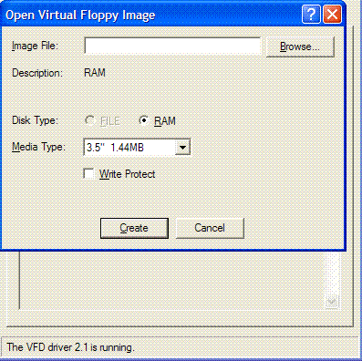
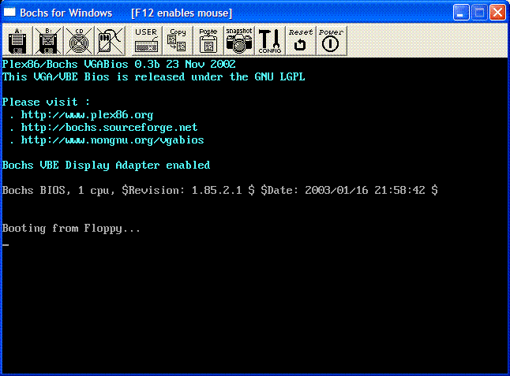

T3 - Bootloaders
This page covers topics such as:
- The booting process - How it works
- Bootloader Theory
- Developing a simple bootloader
- Assembling the bootloader with NASM
- Using the VFD (Virtual Floppy Drive) software; Creating a floppy image
- Using PartCopy; Copying our bootloader to the floppy image
- Using Bochs - Basic Setup and Use; Testing the bootloader
The Boot Process
Pressing the power button
What actually happens when you press the power button? When this button is pressed, the wires connected to the button send an electronic signal to the motherboard. The motherboard simply reroutes this signal to the power supply (PSU).
This signal contains a single bit of data. If it is 0, there is, of course, no power (so the computer is off, or the motherboard is dead). If it is a 1 (meaning an active signal), it means that power is being supplied.
To better understand this, remember the basics of binary logic in computers. 8 "bits" simply represent 8 "wires" or "lines" where electricity can go. A 0 represents no current, while a 1 represents current within a line. This, along with Logic Gates, is the bases of Digital Logic Electronics, at which computers were built.
When the PSU receives this active signal, it begins supplying power to the rest of the system. When the correct amount of power is supplied to all devices, the PSU will be able to continue suppling that power without any major problems.
The PSU then sends a signal, called the "power_good" signal into the motherboard to the Basic Input Output System (BIOS).
BIOS POST
When the BIOS receives this "power_good" signal, the BIOS begins initializing a process called POST (Power On Self Test). The POST then tests to insure there is good amount of power being supplied, the devices installed (such as keyboard, mouse, USB, serial ports, etc.), and insures the memory is good (By testing for memory corruption).
The POST then gives control to the BIOS. The POST loads the BIOS at the end of memory (Might be 0xFFFFF0) and puts a jump instruction at the first byte in memory.
The processors Instruction Pointer (CS:IP) is set to 0, and the processor takes control.
What does this mean? The processor starts executing instructions at address 0x0. In this case, it is the jump instruction placed by the POST. This jump instruction jumps to 0xFFFFF0 (or wherever the BIOS was loaded), and the processor starts executing the BIOS.
The BIOS takes control...
The BIOS
The Basic Input Output System (BIOS) does several things. It creates an Interrupt Vector Table (IVT), and provides some basic interrupt services. The BIOS then does some more tests to insure there is no hardware problems. The BIOS also supplies a Setup utility.
The BIOS then needs to find an OS. Based on the boot order that you set in the BIOS Setup, the BIOS will execute Interrupt (INT) 0x19 to attempt to find a bootable device.
If no bootable device is found (INT 0x19 returns), the BIOS goes on to the next device listed in the boot order. If there is no more devices, it will print an error similar to "No Operating System found" and halt the system.
Interrupts and the Interrupt Vector Table (IVT)
An Interrupt is a subroutine that can be executed from many different programs. These interrupts are stored at address 0x0 into a table called the Interrupt Vector Table. A common interrupts, for example, is INT 0x21 used for DOS.
Note: There is no DOS! The Only interrupts available are the interrupts set up by the BIOS, and no more! The use of other interrupts will cause the system to execute a nonexistent routine, causing your program to crash.
Note: If you switch processor modes, the IVT will not be available. This means absolutely no interrupts--neither software nor hardware, will be available, Not even the BIOS.. For a 32 bit OS, we are going to have to do this. Not yet, though.
BIOS Interrupt 0x19
INT 0x19 - SYSTEM: BOOTSTRAP LOADER Reboots the system through a Warm Reboot without clearing memory or restoring the Interrupt Vector Table (IVT).
This interrupt is executed by the BIOS. It reads the first sector (Sector 1, Head 0, Track 0) of the first hard disk.
Sectors
A "Sector" simply represents a group of 512 bytes. So, Sector 1 represents the first 512 bytes of a disk.
Heads
A "Head" (or Face) represents the side of the disk. Head 0 is the front side, Head 1 is the back side. Most disks only have 1 side, hence only 1 head ("Head 1")
Tracks
To understand tracks, we should look at a picture:

In this picture, This disk could represent a hard disk or floppy disk. Here, we are looking at Head 1 (The front side), and the Sector represents 512 bytes. A Track is a collection of sectors.
Note: Remember that 1 sector is 512 bytes, and there are 18 sectors per track on floppy disks. This will be important when loading files.
If the disk is bootable, Then the bootsector will be loaded at 0x7C00, and INT 0x19 will jump to it, thereby giving control to the bootloader.
Note: Remember that the bootloader is loaded at 0x7C00. This is important!
Note: On some systems, you can also execute a warm boot by putting 0x1234 at address 0x0040:0072, and jumping to 0xFFFF:0. For a cold reboot, store 0x0 instead.
Now, our 1337 bootloader is in control!
Bootloader Theory
We have talked alot about bootloaders. Lets put the important parts together, shall we?
So far, bootloaders...
*...Are stored with the Master Boot Record (MBR). *...Are in the first sector of the disk. *...Is the size of a single sector (512) bytes. *...Are loaded by the BIOS INT 0x19 at address 0x7C00.
As you can imagine, we cannot do a whole lot in 512 bytes. What do we do?
In Assembly Language, we can very easily go beyond the 512 byte mark. So, the code could look just fine, but only a part of it will be in memory. For example, consider this:
mov ax, 4ch
inc bx ; 512 byte
mov [var], bx ; 514 byte
In Assembly language, execution begins from the top of the file downward. However, remember that, when loading files in memory, we are loading sectors. Each of these sectors is 512 bytes, so it will only copy 512 bytes of the file into memory.
If the above code was executed, and only the first sector was loaded in memory, It will only copy up to the 512 byte (The inc bx instruction). So, while the last mov instruction is still on disk, It isnt in memory!.
What will the processor do after inc bx then? It will still continue on to the 514 byte. As this was not in memory, It will execute past the end of our file! The end result? A crash.
However, it is possible to load the second sector (or more) at a given address and execute it. Then the rest of the file will be in memory, and everything will work just fine.
This approach will work, but it will be hard hacked. The most common approach is keeping the bootloader at 512 bytes in size, searching, loading, and executing a second stage bootloader. We will look more into this later.
Hardware Exceptions
Hardware Exceptions are just like Software Exceptions, however the processor will execute them rather then software.
There are times when one must stop all exceptions for happening. For example, when switching computer modes, the entire Interrupt Vector Table is not available, so any interrupt-hardware or software, will cause your system to crash. More on this later.
CLI and STI Instructions
You can use the STI and CLI instructions to enable and disable all interrupts. Most systems do not allow these instructions for applications as it can cause big problems (Although systems can emulate them).
cli ; clear interrupts
; do something...
sti ; enable interrupts--we're in the clear!
Double Fault Hardware Exception
If the processor finds a problem during execution (Such as an invalid instruction, division by 0, etc.) It executes a Second Fault Exception Handler (Double Fault), Which is Interrupt 0x8.
We will be looking a Double Faults later. If the processor still cannot continue after a double fault, it will execute a Triple Fault.
Triple Fault
We seen this term before, haven't we? A CPU that "Triple Faults" simply means the system hard reboots.
In early stages, such as the bootloader, whenever there is a bug in your code, the system will triple fault. This indicates a problem in your code.
Developing a simple Bootloader
Yippee! drum rolls The moment we have been waiting for! :)
Lets take another look at our list:
- Are stored with the Master Boot Record (MBR).
- Are in the first sector of the disk.
- Is the size of a single sector (512) bytes.
- Are loaded by the BIOS INT 0x19 at address 0x7C00.
Open up any ordinary text editor (I am using Visual Studio 2005), but Notepad will suffice.
Here's the bootloader (Boot1.asm) ...
;*********************************************
; Boot1.asm
; - A Simple Bootloader
;
; Operating Systems Development Tutorial
;*********************************************
org 0x7c00 ; We are loaded by BIOS at 0x7C00
bits 16 ; We are still in 16 bit Real Mode
Start:
cli ; Clear all Interrupts
hlt ; halt the system
times 510 - ($-$) db 0 ; We have to be 512 bytes. Clear the rest of the bytes with 0
dw 0xAA55 ; Boot Signature
Some of this should not come to much of a surprise. Lets analyze line by line:
org 0x7c00 ; We are loaded by BIOS at 0x7C00
Remember: The BIOS loads us at 0x7C00. The above code tells NASM to insure all addresses are relative to 0x7C00. This means, the first instruction will be at 0x7C00.
bits 16 ; We are still in 16 bit Real Mode
Remember tutorial two? In that tutorial, I explained how the x86 family is backward compatible with the old DOS systems. Because the old DOS systems were 16 bit, All x86 compatible computers boot into 16 bit mode. This means:
- We are limited to 1 MB (+64k) of memory.
We will need to switch the computer into a 32 bit mode. We will do this later.
times 510 - ($-$) db 0 ; We have to be 512 bytes. Clear the rest of the bytes with 0
I wish this was more documented. In NASM, the dollar operator ($) represents the address of the current line. $$ represents the address of the first instruction (Should be 0x7C00). So, $-$$ returns the number of bytes from the current line to the start (In this case, the size of the program).
dw 0xAA55 ; Boot Signature
This needs some explanation.
Remember that the BIOS INT 0x19 searches for a bootable disk. How does it know if the disk is bootable? The boot signature. If the 511 byte is 0xAA and the 512 byte is 0x55, INT 0x19 will load and execute the bootloader.
Because the boot signature must be the last two bytes in the bootsector, We use the times keyword to calculate the size different to fill in up to the 510th byte, rather then the 512th byte.
Assembling with NASM
NASM is a command line assembler, and hence must be executed either through command line or a batch script. To assemble Boot1.asm do this:
nasm -f bin Boot1.asm -o Boot1.bin
The -f option is used to tell NASM what type of output to generate. In this case, it is a binary program.
-o option is used to give your generated file a different output name. In this case, its Boot1.bin
After assembling, you should have an exact 512 byte file named "Boot1.bin".
Note: For some reason, Windows Explorer limits displaying file sizes to 1 KB. Just see the properties of the file, and it should say 512 bytes.
How to use VFD (Virtual Floppy Drive)
We will use VFD to create a virtual floppy image to copy our OS to. This will explain how to use it.
- Open vfdwin.exe.
- Under the Driver tab, Click the Start button. This starts the driver.
- Click either the Drive0 or Drive1 tab.
- Click Open
You should see this:

Insure Media Type is a standard 3.5" 1.44 MB floppy, and disk type is in RAM. Also, insure Write Protect is disabled. Click "Create".
Go to My Computer (On your computer 😉 ) and you should see a new floppy drive.
To format the disk, right click the drive and go to Properties. Under the VFD Tab will be a format option.
PartCopy - Copying to the Bootsector
Great... Now that we have our boot loader ready, how do we copy it to our disk? As you probably know, Windows will not allow us to directly copy it to the first sector of a disk. Because of this, we need to use a command to do it.
In the first tutorial we have looked at one of these commands: debug. If you have decided to use this command, you can skip this section on partcopy.
PartCopy is a command line program. It uses the following synthax:
partcopy file first_byte last_byte drive
PartCopy can be used for more then just copying files. It can be used for copying certain bytes to and from sectors. Thinking of its format (Shown above) is a safe method.
Because you have an emulated floppy drive, you can refrence the drive name by letter (Like A:).
To copy our bootloader, this will work:
partcopy Boot1.bin 0 200 -f0
f0 represents Floppy Disk 0. You can change between f0, f1, etc based on what drive your floppy disk is in. Boot1.bin is our file to copy. This copies from the first byte (0x0) of the file to the last byte (0x200, which is 512 decimal). Notice that partcopy only accepts hexadecimal numbers.
Warning
Remember using this program can cause parmenant disk curruption if you are not carefull. The above command line commands will only work for floppy disks. Do not attempt to try on hard disks!
Bochs: Testing the bootloader
Bochs is a 32 bit PC emulator. We are going to use Bochs for debugging and testing.
Bochs uses a configuation file that describes the hardware to emulate. For example, this is the configuation file I am using:
# ROM and VGA BIOS images ---------------------------------------------
romimage: file=BIOS-bochs-latest, address=0xf0000
vgaromimage: VGABIOS-lgpl-latest
# boot from floppy using our disk image -------------------------------
floppya: 1_44=a:, status=inserted # Boot from drive A
# logging and reporting -----------------------------------------------
log: OSDev.log # All errors and info logs will output to OSDev.log
error: action=report
info: action=report
The configuation file uses # for comments. It will attempt to boot from whatever floppy disk image (Like the one we created in VFD) in drive A.
The ROM BIOS and VGA BIOS images come with Bochs, so you dont need to worry about that.
Locating the BIOS ROM
A lot of the lines in the configuation file are very simple. There is however one line that we need to look at here however:
romimage: file=BIOS-bochs-latest, address=0xf0000
This line tells Bochs where to place the BIOS in its memory (Virtual RAM). Remember that BIOS sizes may differ? Also remember that the BIOS must end at the end of the first megabyte (0xFFFFF) in memory?
Because of this, you may need to change this line to reposition the Bios. This can be done by getting the size of the Bios image (It should be named BIOS-bochs-latest in your Bochs directory). Get the size in bytes.
After this, simply subtract 0xFFFFF - size of bochs file (in bytes). This will be the new Bios address, so update the address on this line to move the Bios to its new location.
You may or may not need to do this step. If you get an error from Bochs telling you that the Bios must end at 0xFFFFF, then you do need to complete this step and it should work.
How to use Bochs
To use Bochs:
- Execute bochs.exe
- Select option 2 (Read options form); hit enter.
- Type in the configuation files name (The one we created above); hit enter.
- You will be back to the main menu. Select option 5: Begin Simulation, and hit enter.
A new window will open, and this is what you should see:

If Bochs just quits or restarts
...Then you have just experenced a Triple Fault. Go back to the code and try to find where the problem is at. If you need any help, feel free to contact me.
If the Window appears, but does nothing
Congrats! That is our cli and hlt instructions haulting the system, so we know our bootloader is being executed.